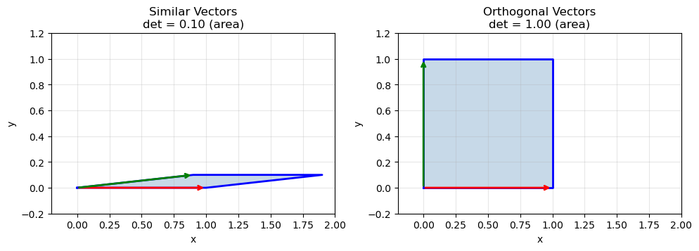
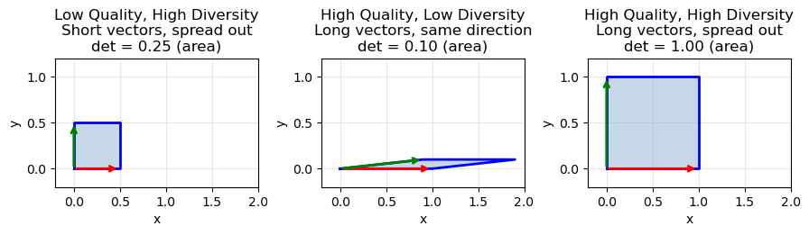
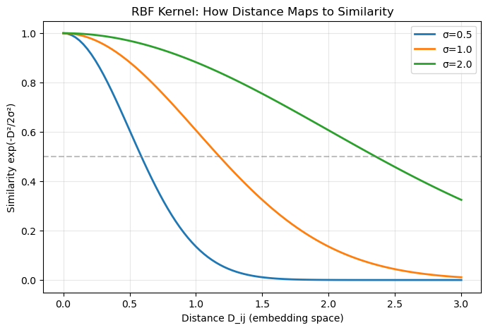

Code
import numpy as np
import matplotlib.pyplot as pltPart 2 of the diversity series: Moving from greedy MMR to principled probabilistic frameworks with DPPs

The views expressed in this blog are solely my own and are not affiliated with my employer in any way. In writing this, I have not utilized any proprietary or confidential information.
In previous blog, we explored MMR as a practical way to inject diversity into recommendation results. MMR works well, but it has a fundamental limitation: it’s greedy and myopic. At each step, it only considers similarity to items already selected, not the global structure of the final set.
What if we could evaluate the diversity of an entire set at once? That’s exactly what Determinantal Point Processes (DPPs) offer. DPPs come from probability theory and give us a principled way to assign higher probability to sets of items that are both high-quality and diverse. For example, MMR might select two sci-fi thrillers that individually seem distinct from other picks, but together make the final set feel repetitive. DPPs evaluate the whole set at once, catching this overlap.
In this post, we’ll:

Before diving into DPPs, we need to refresh one key concept: determinants measure volume.
Consider two vectors in 2D space. The determinant of the matrix formed by these vectors equals the area of the parallelogram they span.
import numpy as np
import matplotlib.pyplot as plt# Two similar vectors (small area)
v1 = np.array([1, 0])
v2 = np.array([0.9, 0.1])
similar_matrix = np.array([v1, v2])
print(f"Similar vectors determinant: {np.linalg.det(similar_matrix):.3f}")
# Two orthogonal vectors (maximum area)
v1 = np.array([1, 0])
v2 = np.array([0, 1])
diverse_matrix = np.array([v1, v2])
print(f"Orthogonal vectors determinant: {np.linalg.det(diverse_matrix):.3f}")Similar vectors determinant: 0.100
Orthogonal vectors determinant: 1.000fig, axes = plt.subplots(1, 2, figsize=(10, 4))
def plot_parallelogram(ax, v1, v2, title, det_val):
v1, v2 = np.array(v1), np.array(v2)
# Plot parallelogram
vertices = np.array([[0, 0], v1, v1 + v2, v2, [0, 0]])
ax.fill(vertices[:, 0], vertices[:, 1], alpha=0.3, color='steelblue')
ax.plot(vertices[:, 0], vertices[:, 1], 'b-', linewidth=2)
# Plot vectors as arrows
ax.annotate('', xy=v1, xytext=(0, 0), arrowprops=dict(arrowstyle='->', color='red', lw=2))
ax.annotate('', xy=v2, xytext=(0, 0), arrowprops=dict(arrowstyle='->', color='green', lw=2))
ax.set_xlim(-0.2, 2.0)
ax.set_ylim(-0.2, 1.2)
ax.set_aspect('equal')
ax.grid(True, alpha=0.3)
ax.set_title(f"{title}\ndet = {det_val:.2f} (area)")
ax.set_xlabel('x')
ax.set_ylabel('y')
# Similar vectors
plot_parallelogram(axes[0], [1, 0], [0.9, 0.1], "Similar Vectors", 0.1)
# Orthogonal vectors
plot_parallelogram(axes[1], [1, 0], [0, 1], "Orthogonal Vectors", 1.0)
plt.tight_layout()
plt.savefig('determinant_volume.png', dpi=150, bbox_inches='tight')
plt.show()
This is the geometric intuition behind DPPs: diverse sets span more volume, giving them higher determinants. When vectors point in similar directions, they span a thin, squashed parallelogram. When they’re spread out, the volume is large.
This extends to higher dimensions. For k vectors in d-dimensional space, the determinant of their Gram matrix (L = VVᵀ) measures the squared volume of the k-dimensional parallelotope they span.
Note: Gram matrix is also called the “kernel matrix” in DPP literature.
# 3 items in 3D feature space
items = np.array([
[1, 0, 0], # Item A
[0, 1, 0], # Item B
[0, 0, 1], # Item C (diverse from A, B)
])
L = items @ items.T # Gram matrix
print(f"Diverse set det(L): {np.linalg.det(L):.3f}")
# Replace C with something similar to A
items_similar = np.array([
[1, 0, 0], # Item A
[0, 1, 0], # Item B
[0.8, 0.1, 0.1], # Item C' (similar to A)
])
L_similar = items_similar @ items_similar.T
print(f"Similar set det(L): {np.linalg.det(L_similar):.3f}")Diverse set det(L): 1.000
Similar set det(L): 0.010The diverse set has 100x higher determinant. This is the core of DPPs: recommendation probability proportional to determinant means diverse sets are exponentially more likely.
Now we can define what a DPP actually is. Given a ground set of N items (our candidate pool), a DPP defines a probability distribution over all possible subsets. The key formula is:
P(Y) ∝ det(L_Y)
where:
Y is a subset of items we might recommendL is an N×N positive semi-definite kernel matrix capturing item relationshipsL_Y is the submatrix of L indexed by items in YThe probability of selecting a set is proportional to the determinant of its kernel submatrix. From our linear algebra refresher, we know determinants measure volume, so diverse sets that span more volume get higher probability.
Let’s use the same video recommendation example from Part 1:
relevance = np.array([0.9, 0.85, 0.8, 0.7, 0.6, 0.5])
genre = ['Action', 'Action', 'Action', 'Comedy', 'Documentary', 'Mixed comedy/documentary']
embeddings = np.array([
[1.0, 0.0, 0.0], # video 0: pure action
[0.9, 0.1, 0.0], # video 1: action (very similar to 0)
[0.8, 0.1, 0.1], # video 2: action (also very similar to 0)
[0.0, 1.0, 0.0], # video 3: comedy
[0.0, 0.0, 1.0], # video 4: documentary
[0.1, 0.5, 0.5], # video 5: mixed
])
# Build kernel matrix L = VVᵀ (Gram matrix from embeddings)
L = embeddings @ embeddings.T
print("Kernel matrix L:")
print(np.round(L, 2))
print(f"\nSimilarity of video 0 ({genre[0]}), with other videos")
for i in range(1,len(genre)):
print(f"Video {i}: {L[0][i]} ({genre[i]})")Kernel matrix L:
[[1. 0.9 0.8 0. 0. 0.1 ]
[0.9 0.82 0.73 0.1 0. 0.14]
[0.8 0.73 0.66 0.1 0.1 0.18]
[0. 0.1 0.1 1. 0. 0.5 ]
[0. 0. 0.1 0. 1. 0.5 ]
[0.1 0.14 0.18 0.5 0.5 0.51]]
Similarity of video 0 (Action), with other videos
Video 1: 0.9 (Action)
Video 2: 0.8 (Action)
Video 3: 0.0 (Comedy)
Video 4: 0.0 (Documentary)
Video 5: 0.1 (Mixed comedy/documentary)Notice how videos 0, 1, 2 (all Action) have high similarity (~0.8-0.9), while Action vs Comedy is 0. Now let’s compare the DPP probability of two different 3-video sets:
def subset_det(L, indices):
"""Compute det(L_Y) for a subset of indices"""
L_Y = L[np.ix_(indices, indices)]
return np.linalg.det(L_Y)
# Set 1: Three action videos (redundant)
redundant = [0, 1, 2] # Action, Action, Action
det_redundant = subset_det(L, redundant)
print(f"Redundant set: {[genre[i] for i in redundant]}")
print(f" det(L_Y) = {det_redundant:.4f}")
# Set 2: Action + Comedy + Documentary (diverse)
diverse = [0, 3, 4]
det_diverse = subset_det(L, diverse)
print(f"\nDiverse set: {[genre[i] for i in diverse]}")
print(f" det(L_Y) = {det_diverse:.4f}")
print(f"\nDiverse set is {det_diverse/det_redundant:.0f}x more likely under DPP")Redundant set: ['Action', 'Action', 'Action']
det(L_Y) = 0.0001
Diverse set: ['Action', 'Comedy', 'Documentary']
det(L_Y) = 1.0000
Diverse set is 10000x more likely under DPPThe diverse set spanning Action, Comedy, and Documentary is 10000x more likely than picking three similar action videos! This is the DPP magic: it naturally penalizes redundancy by evaluating the entire set at once, rather than making greedy pairwise comparisons like MMR.
L needs to be positive semi-definite (PSD). Practically, this means:
Why DPPs require PSD: Since P(Y) ∝ det(L_Y), we need det(L_Y) ≥ 0 for all subsets. PSD guarantees this.
Good news for practitioners: When you build L = VVᵀ (Gram matrix from embeddings), it’s automatically PSD. So as long as you construct your kernel matrix as L = VVᵀ (or use standard similarity kernels like RBF), you’re safe. You only run into trouble if you manually construct L with arbitrary values.

So far our kernel matrix L only captures similarity between items. But in real recommendations, we care about both quality (relevance) and diversity. A diverse set of low-quality items is useless.
DPPs handle this elegantly through the quality-diversity decomposition:
L[i,j] = q_i × q_j × S[i,j]
where:
q_i is the quality (relevance) score for item iS[i,j] is the similarity between items i and j (from embeddings)This decomposes naturally: diagonal entries L[i,i] = q_i² capture item quality, while off-diagonal entries capture similarity scaled by both items’ quality. High-quality similar items create larger off-diagonal terms, which reduce the determinant (penalizing redundancy among your best items).
Let’s rebuild our kernel matrix with relevance scores:
# Similarity matrix from embeddings
S = embeddings @ embeddings.T
# Quality-weighted kernel: L[i,j] = q_i * q_j * S[i,j]
q = relevance.reshape(-1, 1) # Column vector
L_quality = (q @ q.T) * S
print("Quality-weighted kernel L:")
print(np.round(L_quality, 3))Quality-weighted kernel L:
[[0.81 0.688 0.576 0. 0. 0.045]
[0.688 0.592 0.496 0.06 0. 0.06 ]
[0.576 0.496 0.422 0.056 0.048 0.072]
[0. 0.06 0.056 0.49 0. 0.175]
[0. 0. 0.048 0. 0.36 0.15 ]
[0.045 0.06 0.072 0.175 0.15 0.128]]Let’s compare the two sets again with the new kernel matrix:
redundant = [0, 1, 2] # Top 3 by relevance, all Action
diverse = [0, 3, 4] # Action + Comedy + Documentary
det_redundant = subset_det(L_quality, redundant)
det_diverse = subset_det(L_quality, diverse)
print(f"Redundant set (top-3 relevance): {[f'{genre[i]} ({relevance[i]})' for i in redundant]}")
print(f" det = {det_redundant:.6f}")
print(f"\nDiverse set (mixed relevance): {[f'{genre[i]} ({relevance[i]})' for i in diverse]}")
print(f" det = {det_diverse:.6f}")
print(f"\nDiverse set is {det_diverse/det_redundant:.0f}x more likely")Redundant set (top-3 relevance): ['Action (0.9)', 'Action (0.85)', 'Action (0.8)']
det = 0.000037
Diverse set (mixed relevance): ['Action (0.9)', 'Comedy (0.7)', 'Documentary (0.6)']
det = 0.142884
Diverse set is 3815x more likelyEven though the diverse set includes lower-relevance items (0.7, 0.6 vs 0.85, 0.8), the diversity bonus from spanning different genres still makes it far more probable (3815x as compared to 10000x before). The quality weighting ensures we don’t pick diverse but irrelevant items.
The intuition: Think of q_i as the “length” of item i’s feature vector. The determinant measures the volume spanned by these vectors. A high-quality item contributes a longer vector, but if two long vectors point in the same direction (similar items), the parallelogram is still flat. You need both length (quality) AND spread (diversity) to maximize volume.
fig, axes = plt.subplots(1, 3, figsize=(9, 4))
# Case 1: Short vectors, diverse directions
plot_parallelogram(axes[0], [0.5, 0], [0, 0.5],
"Low Quality, High Diversity\nShort vectors, spread out", 0.25)
# Case 2: Long vectors, similar directions
plot_parallelogram(axes[1], [1.0, 0], [0.9, 0.1],
"High Quality, Low Diversity\nLong vectors, same direction", 0.10)
# Case 3: Long vectors, diverse directions (ideal)
plot_parallelogram(axes[2], [1.0, 0], [0, 1.0],
"High Quality, High Diversity\nLong vectors, spread out", 1.00)
plt.tight_layout()
plt.savefig('quality_diversity_volume.png', dpi=150, bbox_inches='tight')
plt.show()
This maps directly to production recsys:
q_i = your relevance model output (e.g., predicted click probability)S[i,j] = Similarity of content embeddings (or 1 - distance in any embedding space)L = the kernel that balances both signalsWe’ve established that DPPs assign higher probability to diverse, high-quality sets via determinants. The natural question: how do we find the best set?
The challenge: Finding the subset Y that maximizes det(L_Y) is called MAP (Maximum A Posteriori) inference. With N candidates, there are 2^N possible subsets. This is NP-hard in general.
The solution: Greedy MAP approximation. Build the set one item at a time, always adding whichever item increases the determinant most. This runs in O(Nk³) time and provides provably good approximations, where N is the number of candidates to select from and k is the number of items to select.
Let’s trace through selecting 3 videos from our candidate pool. At each step, we try adding every remaining candidate and pick whoever maximizes det(L_Y).
Step 1: First Selection
With an empty set, we’re just comparing single-item determinants. For a 1×1 matrix, det([L[i,i]]) = L[i,i] = q_i². So the first pick is simply the highest-quality item:
print("Step 1: Evaluating single-item determinants (= quality squared)")
for i in range(len(relevance)):
det_single = L_quality[i, i]
print(f" Video {i} ({genre[i]}): det = {det_single:.3f} (relevance² = {relevance[i]**2:.3f})")
first_pick = int(np.argmax([L_quality[i,i] for i in range(len(relevance))]))
print(f"\n→ Select video {first_pick} ({genre[first_pick]})")Step 1: Evaluating single-item determinants (= quality squared)
Video 0 (Action): det = 0.810 (relevance² = 0.810)
Video 1 (Action): det = 0.592 (relevance² = 0.722)
Video 2 (Action): det = 0.422 (relevance² = 0.640)
Video 3 (Comedy): det = 0.490 (relevance² = 0.490)
Video 4 (Documentary): det = 0.360 (relevance² = 0.360)
Video 5 (Mixed comedy/documentary): det = 0.128 (relevance² = 0.250)
→ Select video 0 (Action)Step 2: Second Selection
Now it gets interesting. We evaluate each remaining candidate by computing det(L_Y) for the 2-item set:
selected = [first_pick]
print(f"Step 2: Current set = [Video {first_pick}]")
print("Evaluating candidates:")
for candidate in range(len(relevance)):
if candidate in selected:
continue
subset = selected + [candidate]
L_subset = L_quality[np.ix_(subset, subset)]
det_val = np.linalg.det(L_subset)
# Show the 2x2 matrix being evaluated
print(f"\n Video {candidate} ({genre[candidate]}):")
print(f" L_subset = [[{L_subset[0,0]:.3f}, {L_subset[0,1]:.3f}],")
print(f" [{L_subset[1,0]:.3f}, {L_subset[1,1]:.3f}]]")
print(f" det = {L_subset[0,0]:.3f} × {L_subset[1,1]:.3f} - {L_subset[0,1]:.3f} × {L_subset[1,0]:.3f} = {det_val:.4f}")Step 2: Current set = [Video 0]
Evaluating candidates:
Video 1 (Action):
L_subset = [[0.810, 0.689],
[0.689, 0.592]]
det = 0.810 × 0.592 - 0.689 × 0.689 = 0.0059
Video 2 (Action):
L_subset = [[0.810, 0.576],
[0.576, 0.422]]
det = 0.810 × 0.422 - 0.576 × 0.576 = 0.0104
Video 3 (Comedy):
L_subset = [[0.810, 0.000],
[0.000, 0.490]]
det = 0.810 × 0.490 - 0.000 × 0.000 = 0.3969
Video 4 (Documentary):
L_subset = [[0.810, 0.000],
[0.000, 0.360]]
det = 0.810 × 0.360 - 0.000 × 0.000 = 0.2916
Video 5 (Mixed comedy/documentary):
L_subset = [[0.810, 0.045],
[0.045, 0.128]]
det = 0.810 × 0.128 - 0.045 × 0.045 = 0.1013Notice how adding another Action video (high off-diagonal similarity) leads to a lower determinant, while Comedy or Documentary (zero similarity to Action) leads to a higher determinant. In this case we will pick Video 3 as it has the highest determinant of 0.3969.
# Find second pick
best_det, second_pick = -1, None
for candidate in range(len(relevance)):
if candidate in selected:
continue
subset = selected + [candidate]
det_val = np.linalg.det(L_quality[np.ix_(subset, subset)])
if det_val > best_det:
best_det, second_pick = det_val, candidate
print(f"\n→ Select video {second_pick} ({genre[second_pick]}), det = {best_det:.4f}")
selected.append(second_pick)
→ Select video 3 (Comedy), det = 0.3969Step 3: Third Selection
Same process with a 3×3 determinant:
print(f"Step 3: Current set = {selected}")
print("Evaluating candidates:")
for candidate in range(len(relevance)):
if candidate in selected:
continue
subset = selected + [candidate]
det_val = np.linalg.det(L_quality[np.ix_(subset, subset)])
print(f" Video {candidate} ({genre[candidate]}): det = {det_val:.4f}")
# Find third pick
best_det, third_pick = -1, None
for candidate in range(len(relevance)):
if candidate in selected:
continue
subset = selected + [candidate]
det_val = np.linalg.det(L_quality[np.ix_(subset, subset)])
if det_val > best_det:
best_det, third_pick = det_val, candidate
selected.append(third_pick)
print(f"\n→ Select video {third_pick} ({genre[third_pick]})")
print(f"\nFinal selection: {[genre[i] for i in selected]}")Step 3: Current set = [0, 3]
Evaluating candidates:
Video 1 (Action): det = 0.0000
Video 2 (Action): det = 0.0025
Video 4 (Documentary): det = 0.1429
Video 5 (Mixed comedy/documentary): det = 0.0248
→ Select video 4 (Documentary)
Final selection: ['Action', 'Comedy', 'Documentary']Now we can wrap this into a clean function:
def greedy_map_dpp(L, k):
N = L.shape[0]
selected = []
remaining = set(range(N))
for _ in range(k):
best_item, best_det = None, -1
for item in remaining:
candidate_set = selected + [item]
det_val = np.linalg.det(L[np.ix_(candidate_set, candidate_set)])
if det_val > best_det:
best_det = det_val
best_item = item
selected.append(best_item)
remaining.remove(best_item)
return selected
# Run it
result = greedy_map_dpp(L_quality, k=3)
print(f"Greedy MAP result: {[f'{genre[i]} ({relevance[i]})' for i in result]}")Greedy MAP result: ['Action (0.9)', 'Comedy (0.7)', 'Documentary (0.6)']Pure relevance ranking would give us Action, Action, Action. DPP gives us Action, Comedy, Documentary. Three genres covered in three slots.

In production, you need a way to control how much the system emphasizes relevance versus diversity. YouTube’s approach, described in their 2018 paper on DPPs for recommendations, provides a clean parameterization that’s proven to work at scale.
Instead of the simple L[i,j] = q_i × q_j × S[i,j] formulation, YouTube uses:
L[i,i] = q_i² (diagonal: quality squared)
L[i,j] = α × q_i × q_j × exp(-D_ij / 2σ²) for i ≠ j (off-diagonal: scaled similarity)
where:
q_i is the relevance score for item iD_ij is the distance between items i and j in embedding spaceα controls the overall strength of diversity (0 ≤ α ≤ 1)σ controls the length scale of similarityThe key insight: The diagonal entries (quality) remain unchanged, but off-diagonal entries (similarity) are scaled by α. This gives you direct control over the diversity penalty.
Note: This formulation is identical to a standard (Gaussian) radial basis function (RBF) kernel when α = 1.
α (diversity strength):
σ (similarity scale):
Let’s implement this new kernel building function:
def youtube_dpp_kernel(relevance, embeddings, alpha=0.5, sigma=1.0):
N = len(relevance)
L = np.zeros((N, N))
# Compute pairwise distances
# D_ij = ||embedding_i - embedding_j||²
for i in range(N):
for j in range(N):
if i == j:
# Diagonal: quality squared
L[i, i] = relevance[i] ** 2
else:
# Off-diagonal: scaled similarity with RBF kernel
D_ij = np.sum((embeddings[i] - embeddings[j]) ** 2)
similarity = np.exp(-D_ij / (2 * sigma**2))
L[i, j] = alpha * relevance[i] * relevance[j] * similarity
return L
# Build kernel with YouTube's approach
L_youtube = youtube_dpp_kernel(relevance, embeddings, alpha=0.5, sigma=1.0)
print("YouTube DPP kernel (α=0.5, σ=1.0):")
print(np.round(L_youtube, 3))YouTube DPP kernel (α=0.5, σ=1.0):
[[0.81 0.379 0.349 0.116 0.099 0.117]
[0.379 0.722 0.337 0.132 0.103 0.126]
[0.349 0.337 0.64 0.135 0.116 0.133]
[0.116 0.132 0.135 0.49 0.077 0.136]
[0.099 0.103 0.116 0.077 0.36 0.116]
[0.117 0.126 0.133 0.136 0.116 0.25 ]]Let’s see how α affects the diversity-quality tradeoff:
print("\nα parameter sweep (σ=1.0 fixed):")
print(f"{'α':<6} {'Selected Items':<50} {'Genres':<40}")
print("-" * 95)
alphas = [0.0, 0.25, 0.5, 0.75, 1.0]
for alpha in alphas:
L_alpha = youtube_dpp_kernel(relevance, embeddings, alpha=alpha, sigma=1.0)
selected = greedy_map_dpp(L_alpha, k=3)
items_str = ", ".join([f"V{i}({relevance[i]:.2f})" for i in selected])
genres_str = ", ".join([genre[i] for i in selected])
print(f"{alpha:<6.2f} {items_str:<50} {genres_str:<40}")
α parameter sweep (σ=1.0 fixed):
α Selected Items Genres
-----------------------------------------------------------------------------------------------
0.00 V0(0.90), V1(0.85), V2(0.80) Action, Action, Action
0.25 V0(0.90), V1(0.85), V2(0.80) Action, Action, Action
0.50 V0(0.90), V1(0.85), V3(0.70) Action, Action, Comedy
0.75 V0(0.90), V3(0.70), V4(0.60) Action, Comedy, Documentary
1.00 V0(0.90), V3(0.70), V4(0.60) Action, Comedy, Documentary Key observations:
The transition happens around α = 0.5, where the diversity penalty becomes strong enough to outweigh small relevance differences. In production, you’d tune α based on metrics like session diversity, user engagement, or A/B test results.
The σ parameter controls what counts as “similar”. Let’s fix α = 0.75 and vary σ:
print("\nσ parameter sweep (α=0.75 fixed):")
print(f"{'σ':<6} {'Selected Items':<50} {'Genres':<40}")
print("-" * 95)
sigmas = [0.1, 0.5, 1.0, 2.0, 5.0]
for sigma in sigmas:
L_sigma = youtube_dpp_kernel(relevance, embeddings, alpha=0.75, sigma=sigma)
selected = greedy_map_dpp(L_sigma, k=3)
items_str = ", ".join([f"V{i}({relevance[i]:.2f})" for i in selected])
genres_str = ", ".join([genre[i] for i in selected])
print(f"{sigma:<6.1f} {items_str:<50} {genres_str:<40}")
σ parameter sweep (α=0.75 fixed):
σ Selected Items Genres
-----------------------------------------------------------------------------------------------
0.1 V0(0.90), V1(0.85), V2(0.80) Action, Action, Action
0.5 V0(0.90), V3(0.70), V4(0.60) Action, Comedy, Documentary
1.0 V0(0.90), V3(0.70), V4(0.60) Action, Comedy, Documentary
2.0 V0(0.90), V3(0.70), V1(0.85) Action, Comedy, Action
5.0 V0(0.90), V1(0.85), V2(0.80) Action, Action, Action Key observations:
In practice, σ should match the natural scale of your embedding space. If your embeddings are normalized (unit length), σ ≈ 1.0 is a reasonable starting point. Tune it based on how strict you want diversity: smaller σ for subtle redundancy detection within tight clusters, larger σ for aggressive spreading across broader categories.
The exp(-D_ij / 2σ²) term is an RBF (Radial Basis Function) kernel. Let’s visualize how it maps distances to similarities:
fig, ax = plt.subplots(figsize=(8, 5))
distances = np.linspace(0, 3, 100)
for sigma in [0.5, 1.0, 2.0]:
similarities = np.exp(-distances**2 / (2 * sigma**2))
ax.plot(distances, similarities, label=f'σ={sigma}', linewidth=2)
ax.set_xlabel('Distance D_ij (embedding space)')
ax.set_ylabel('Similarity exp(-D²/2σ²)')
ax.set_title('RBF Kernel: How Distance Maps to Similarity')
ax.legend()
ax.grid(True, alpha=0.3)
ax.axhline(y=0.5, color='gray', linestyle='--', alpha=0.5)
plt.savefig('rbf_kernel.png', dpi=150, bbox_inches='tight')
plt.show()
Interpretation: With σ = 1.0, items at distance 1.0 have similarity ≈ 0.6 (moderate penalty), while items at distance 2.0 have similarity ≈ 0.14 (weak penalty). Smaller σ makes the kernel “sharper” — only very close items are considered similar.
Tuning strategy:
Start with α = 0.5, σ = 1.0: This is a reasonable default that balances quality and diversity.
Tune α first:
Then tune σ:
A/B test top candidates: Run online experiments with 2-3 (α, σ) pairs to validate offline metrics.
Typical values in production:
The beauty of YouTube’s parameterization is that it decouples quality (diagonal) from diversity (off-diagonal), giving you two independent knobs to tune the system behavior.
The greedy MAP algorithm we implemented earlier works well for selecting a fixed top-k set. However, YouTube’s production system needs to rank entire feeds of hundreds or thousands of videos. Their 2018 paper introduces a windowed approach that processes candidates in batches, making DPPs scalable for large-scale recommendation systems.
Instead of selecting all k items at once from the full candidate pool, YouTube’s algorithm:
This approach has several advantages:
Here’s the algorithm from YouTube’s paper:

def youtube_dpp_ranking(relevance, embeddings, k, alpha=0.5, sigma=1.0):
W = list(range(len(relevance))) # Remaining candidate indices
R = [] # Final ranked list
while len(W) > 0:
# Build kernel for current candidate pool
rel_W = relevance[W]
emb_W = embeddings[W]
L = youtube_dpp_kernel(rel_W, emb_W, alpha=alpha, sigma=sigma)
# Select up to k items from current pool
window_size = min(k, len(W))
M = greedy_map_dpp(L, k=window_size)
# Map back to original indices
selected_items = [W[i] for i in M]
R.extend(selected_items)
# Remove selected items from candidate pool
W = [w for w in W if w not in selected_items]
return RLet’s trace through ranking all 6 videos with window size k=2:
print("YouTube Windowed DPP (k=2, α=0.75, σ=1.0)")
print("=" * 70)
# We'll manually trace the first few iterations
W = list(range(len(relevance)))
R = []
k_window = 2
alpha, sigma = 0.75, 1.0
iteration = 1
while len(W) > 0 and iteration <= 3: # Show first 3 iterations
print(f"\nIteration {iteration}:")
print(f" Remaining pool W: {W}")
print(f" Pool genres: {[genre[i] for i in W]}")
# Build kernel for current pool
rel_W = relevance[W]
emb_W = embeddings[W]
L = youtube_dpp_kernel(rel_W, emb_W, alpha=alpha, sigma=sigma)
# Select k items
window_size = min(k_window, len(W))
M = greedy_map_dpp(L, k=window_size)
selected_items = [W[i] for i in M]
print(f" Selected from pool: {M} (pool indices)")
print(f" Maps to original: {selected_items}")
print(f" Genres: {[genre[i] for i in selected_items]}")
print(f" Relevance: {[relevance[i] for i in selected_items]}")
R.extend(selected_items)
W = [w for w in W if w not in selected_items]
iteration += 1
print(f"\n{'─'*70}")
print(f"Final ranking R: {R}")
print(f"Genres: {[genre[i] for i in R]}")YouTube Windowed DPP (k=2, α=0.75, σ=1.0)
======================================================================
Iteration 1:
Remaining pool W: [0, 1, 2, 3, 4, 5]
Pool genres: ['Action', 'Action', 'Action', 'Comedy', 'Documentary', 'Mixed comedy/documentary']
Selected from pool: [0, 3] (pool indices)
Maps to original: [0, 3]
Genres: ['Action', 'Comedy']
Relevance: [np.float64(0.9), np.float64(0.7)]
Iteration 2:
Remaining pool W: [1, 2, 4, 5]
Pool genres: ['Action', 'Action', 'Documentary', 'Mixed comedy/documentary']
Selected from pool: [0, 2] (pool indices)
Maps to original: [1, 4]
Genres: ['Action', 'Documentary']
Relevance: [np.float64(0.85), np.float64(0.6)]
Iteration 3:
Remaining pool W: [2, 5]
Pool genres: ['Action', 'Mixed comedy/documentary']
Selected from pool: [0, 1] (pool indices)
Maps to original: [2, 5]
Genres: ['Action', 'Mixed comedy/documentary']
Relevance: [np.float64(0.8), np.float64(0.5)]
──────────────────────────────────────────────────────────────────────
Final ranking R: [0, 3, 1, 4, 2, 5]
Genres: ['Action', 'Comedy', 'Action', 'Documentary', 'Action', 'Mixed comedy/documentary']Key observations:
Notice how diversity is enforced within each window of 2 items, not just globally. This ensures users see varied content throughout their feed, not just at the top.
Let’s compare the two approaches side-by-side:
# Single-pass: select top-3 from full pool at once
L_full = youtube_dpp_kernel(relevance, embeddings, alpha=0.75, sigma=1.0)
single_pass = greedy_map_dpp(L_full, k=3)
# Windowed: select in windows of k=2
windowed_result = youtube_dpp_ranking(relevance, embeddings, k=2, alpha=0.75, sigma=1.0)
print("Comparison of top-3 selections:")
print(f"{'Method':<20} {'Indices':<15} {'Genres':<50} {'Relevance'}")
print("─" * 100)
single_genres = [genre[i] for i in single_pass]
single_rel = [float(relevance[i]) for i in single_pass]
print(f"{'Single-pass':<20} {str(single_pass):<15} {', '.join(single_genres):<50} {single_rel}")
windowed_top3 = windowed_result[:3]
windowed_genres = [genre[i] for i in windowed_top3]
windowed_rel = [float(relevance[i]) for i in windowed_top3]
print(f"{'Windowed (k=2)':<20} {str(windowed_top3):<15} {', '.join(windowed_genres):<50} {windowed_rel}")Comparison of top-3 selections:
Method Indices Genres Relevance
────────────────────────────────────────────────────────────────────────────────────────────────────
Single-pass [0, 3, 4] Action, Comedy, Documentary [0.9, 0.7, 0.6]
Windowed (k=2) [0, 3, 1] Action, Comedy, Action [0.9, 0.7, 0.85]The windowed approach includes Video 1 (Action, 0.85) in the top-3 because it was selected in the second window after Videos 0 and 3 were removed. This demonstrates how window size k affects the ranking: smaller windows enforce local diversity but may allow similar items to appear nearby across window boundaries.
In the paper, it’s mentioned that typically the candidate pool is several hundreds of videos and sub-window size is a dozen (12) or so videos.
The windowed algorithm is YouTube’s production solution for bringing the mathematical elegance of DPPs to real-world scale. By processing items in batches, it maintains diversity guarantees while handling feeds with thousands of candidates in milliseconds.
Now that we’ve covered DPP theory and implementation, let’s see how it fits into a production recommendation system. Recall from Part 1 the standard recommendation pipeline:

DPPs slot into the Re-ranking stage, right where we used MMR in Part 1. Here’s how the stages work together:
1. Candidate Generation (Recall)
2. Scoring (Ranking)
q_i for each item, typically in 200-500 candidates3. Re-ranking (Diversity)
L[i,j] = α × q_i × q_j × exp(-D_ij / 2σ²)4. Business Logic
The key advantage of DPPs is that they give you a mathematically principled way to balance quality and diversity, backed by decades of research in probability theory. Once you understand the volume-based intuition, the system becomes just as interpretable as MMR but with stronger theoretical guarantees.
DPPs provide a mathematically principled framework for diversity. Unlike greedy approaches like MMR that make local decisions, DPPs evaluate entire sets at once through determinants. This volume-based intuition (diverse sets span more space) translates directly into probability: P(Y) ∝ det(L_Y).
The quality-diversity decomposition maps naturally to production recsys. The kernel formulation L[i,j] = α × q_i × q_j × similarity(i,j) cleanly separates relevance (from your ML model) and diversity (from content embeddings). You get two interpretable knobs: α controls how much diversity matters, σ controls what counts as “similar.”
Greedy MAP is deterministic and faster. While exact MAP inference is NP-hard, the greedy algorithm runs in O(Nk²) time and provides strong approximations. Unlike sampling-based approaches, it’s deterministic and stable, making it suitable for A/B testing and debugging.
YouTube’s windowed approach scales to video feeds. By processing candidates in batches of k items (typically 6-12), the algorithm maintains diversity throughout long feeds, not just at the top. This makes DPPs practical for ranking hundreds or thousands of candidates in milliseconds.
Previous blog post:
I hope you found this deep dive into DPPs useful! If you’re implementing diversity in your recommendation system, I’d love to hear about your experience. Connect with me on LinkedIn to share your thoughts or questions.